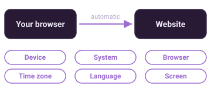
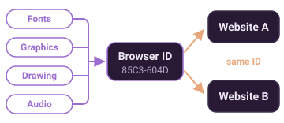
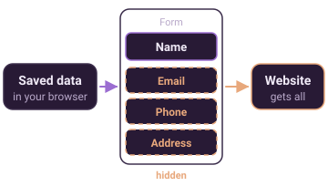
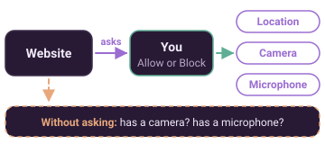
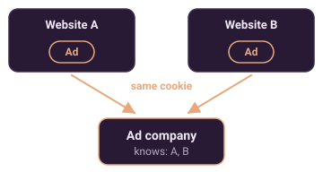
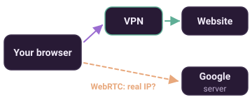

What does a website learn about you?
Each website gets data about your device when you open it. This page shows that data and what it means.
1. What all websites see
Your browser sends this data to each website automatically.

Show more
This page shows what your browser reports. Websites cannot check if it is true.
"Desktop site" mode on a phone makes your browser report a computer. Then these results change.
Connection in use: if Wi-Fi and mobile data are both on, your phone uses Wi-Fi. It changes to mobile data if the Wi-Fi is weak. This result changes too.
Websites cannot see your Wi-Fi name.
Some browsers report false data on purpose to protect you.
2. Your browser fingerprint
Trackers combine small tests into one ID. The ID is the same on all websites.

Show more
The ID is not saved in a cookie. Clearing cookies does not remove it.
Each browser gives a different ID. Open this page in a different browser to compare.
Hidden drawing test: the page draws text and shapes in a box that you cannot see. Each device draws them a little differently.
The drawing and audio results are short codes. The same code on two websites means the same browser.
The user agent is the identity text that your browser sends to each website.
3. Does your browser say "do not sell my data"?
Your browser can send this request to each website.
Show more
The name of the request is Global Privacy Control (GPC).
In some US states, the law tells websites to obey it. California and Colorado are examples.
Do Not Track is an older request. Most websites ignore it.
4. Autofill: hidden boxes
Autofill can also fill in boxes that you cannot see.

Stays on this page. This page does not send or keep your data.
Show more
A website can show one box for your name. Hidden boxes can then get your email, phone and address.
Typing does not test anything. Use a saved suggestion from your browser.
Your data shows only on your screen. Select Clear or close the page to delete it.
5. Location, camera and microphone
A website must ask before it uses these. But it can see some things without asking.

What does your location show?
This test asks for your location. It shows how exact it is.
Before you start: your browser asks you first. It can use a location service (for example Google or Apple). This page does not send your location.
Show more
This page can see only its own access. It cannot see what you allowed for other websites.
To see all websites with access, open Site settings in your browser.
"Asks first" is the safe setting. "Allowed" means that the website can use it without asking again.
6. Can ads follow you to other websites?
One ad company is on many websites. Its cookie can identify you on each of them.

Show more
A cookie is a small file that a website keeps in your browser. It lets the website remember you.
A third-party cookie comes from a different company on the page, for example an ad.
With these cookies, an ad company can make a list of the websites that you visit.
7. Optional tests
Do you have a tracker blocker?
This test tries to load tracker scripts. It shows if something stops them.
Before you start: if nothing stops the scripts, Google, Meta and Microsoft see your IP address. The test sends no cookies.
Can your IP address get past your VPN?
WebRTC is a browser feature for video calls. It can show your real IP address.

Before you start: this test asks a Google server for your IP address. Google sees the request. Only you see the result.
Have Android? The PrivacyBrew app does the same for the apps on your phone.